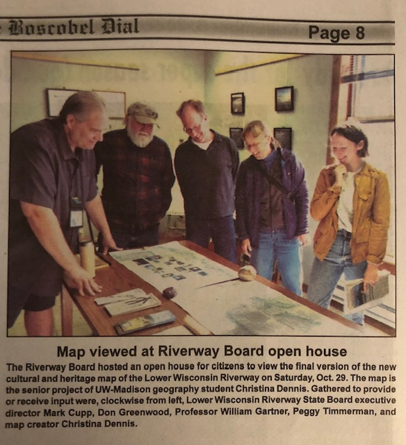

Lower Wisconsin State Riverway Nature and Culture

This map is the first place winner of the Spring 2022 Barbara Bartz Petchenik Award at the undergraduate level.
I created this map for my year-long senior honors thesis project, advised by Bill Gartner. The focus of the project is incorporating user-centered design into mapping the natural and cultural resources of the LWSR.
This project is still ongoing. The map will change as I continue to meet with people and collect user-input. The current printed dimensions are 42x24in.
I have been meeting with local residents and stakeholders in the LWSR to include input from end users. It will eventually be printed through the UW Cartography lab and distributed through multiple outlets along the LWSR, specifically the LWSR Board headquarters in Muscoda, WI.
In April, 2022, I presented my progress at the UW-Madison Senior Honors Thesis Symposium, which was a requirement for receiving a summer research grant that the the UW Madison Honors Program and College of Letters and Science awarded me in 2021.
Here are some articles about the meetings on the riverway!
Spring Green, August 25, 2022
Spring Green, September 22, 2022
